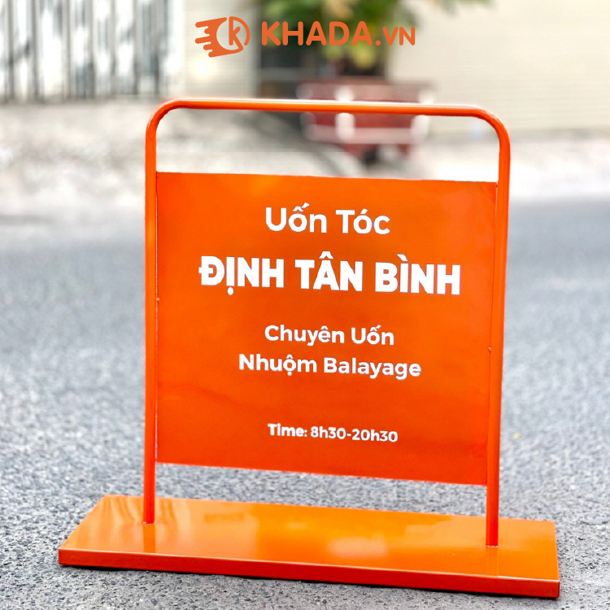
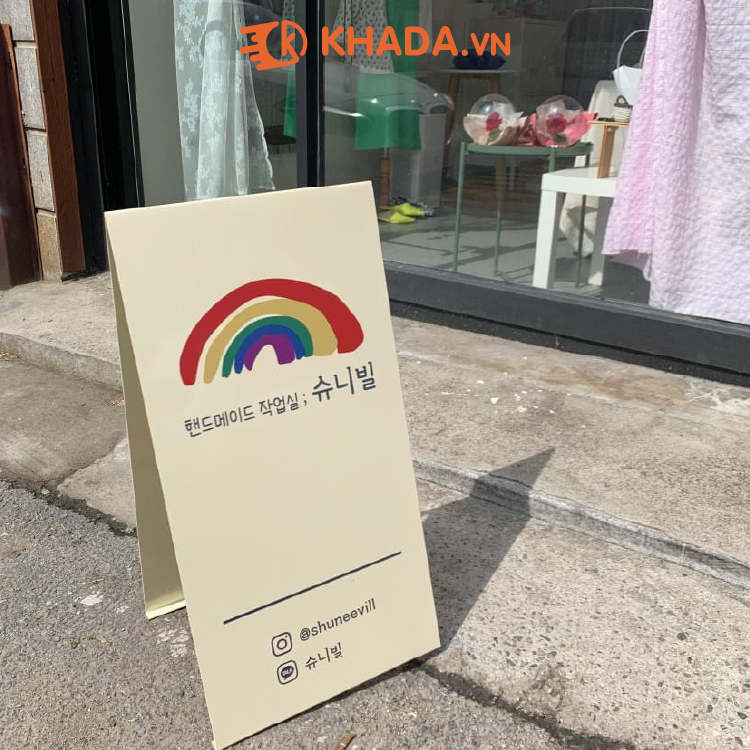
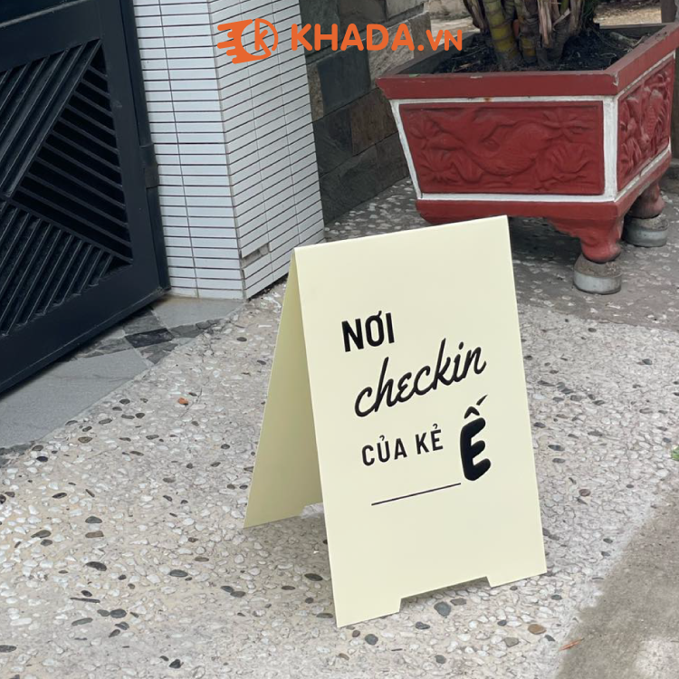

<?xml version="1.0" encoding="UTF-8"?>
<rss version="2.0"
     xmlns:content="http://purl.org/rss/1.0/modules/content/"
     xmlns:wfw="http://wellformedweb.org/CommentAPI/"
     xmlns:dc="http://purl.org/dc/elements/1.1/"
     xmlns:atom="http://www.w3.org/2005/Atom"
     xmlns:sy="http://purl.org/rss/1.0/modules/syndication/"
     xmlns:slash="http://purl.org/rss/1.0/modules/slash/"
     xmlns:media="http://search.yahoo.com/mrss/">

    <channel>
        <title>Sản phẩm &#8211; KHADA Khắc Dấu lấy liền</title>
        <atom:link href="https://xuongkhacdauhn.com/san-pham/feed/" rel="self" type="application/rss+xml"/>
        <link>
        https://xuongkhacdauhn.com</link>
        <description>KHADA Khắc Dấu lấy liền</description>
        <lastBuildDate>Tue, 18 Feb 2025 16:57:13 +0000</lastBuildDate>
        <language>vi</language>
        <sy:updatePeriod>
            hourly
        </sy:updatePeriod>
        <sy:updateFrequency>
            1
        </sy:updateFrequency>
        <generator>https://wordpress.org/?v=6.7.2</generator>
        <item>
            <title>Bảng decor hàn quốc sắt tròn kích thước 70x70cm</title>
            <link>
            https://xuongkhacdauhn.com/san-pham/bang-decor-han-quoc-sat-tron-kich-thuoc-70x70cm/</link>
            <comments>https://xuongkhacdauhn.com/san-pham/bang-decor-han-quoc-sat-tron-kich-thuoc-70x70cm/#respond</comments>

            <dc:creator><![CDATA[KHẮC DẤU KHADA]]></dc:creator>
            <pubDate>Thu, 04 Apr 2024 09:39:13 +0000</pubDate>
            <guid isPermaLink="false">https://xuongkhacdauhn.com/?post_type=product&#038;p=2370</guid>

            <description><![CDATA[]]></description>
            <content:encoded><![CDATA[<p></p>
                ]]>
            </content:encoded>

            <wfw:commentRss>https://xuongkhacdauhn.com/san-pham/bang-decor-han-quoc-sat-tron-kich-thuoc-70x70cm/feed/
            </wfw:commentRss>
            <slash:comments>0</slash:comments>


        </item>
        <item>
            <title>Bảng sắt uốn tròn decor hàng quốc 50x70cm</title>
            <link>
            https://xuongkhacdauhn.com/san-pham/bang-sat-uon-tron-decor-hang-quoc-50x70cm/</link>
            <comments>https://xuongkhacdauhn.com/san-pham/bang-sat-uon-tron-decor-hang-quoc-50x70cm/#respond</comments>

            <dc:creator><![CDATA[KHẮC DẤU KHADA]]></dc:creator>
            <pubDate>Thu, 04 Apr 2024 09:26:34 +0000</pubDate>
            <guid isPermaLink="false">https://xuongkhacdauhn.com/?post_type=product&#038;p=2348</guid>

            <description><![CDATA[
                <div dir="auto">* Chất liệu sắt tròn uốn hàn tấm thép</div>
                <div dir="auto">* Sơn màu theo yêu cầu</div>
                <div dir="auto">* Nội dung in theo yêu cầu</div>
                <div dir="auto">Bền bỉ không ngại mưa nắng.</div>
                <div dir="auto">- Sản phẩm decor xu hướng hiện đại, sang trọng dành cho các bạn yêu thích decor</div>
                <div dir="auto">- Phù hợp : Tiệm Coffee, Nail, Spa, Wedding, Phòng ngủ, Nhà Hàng, Quán Bar, Pub… Và hơn
                    thế nữa.
                </div>
                ]]>
            </description>
            <content:encoded><![CDATA[<p></p>
                ]]>
            </content:encoded>

            <wfw:commentRss>https://xuongkhacdauhn.com/san-pham/bang-sat-uon-tron-decor-hang-quoc-50x70cm/feed/</wfw:commentRss>
            <slash:comments>0</slash:comments>


        </item>
        <item>
            <title>Bảng sắt decor hàn quốc</title>
            <link>
            https://xuongkhacdauhn.com/san-pham/bang-sat-decor-han-quoc/</link>
            <comments>https://xuongkhacdauhn.com/san-pham/bang-sat-decor-han-quoc/#respond</comments>

            <dc:creator><![CDATA[KHẮC DẤU KHADA]]></dc:creator>
            <pubDate>Thu, 04 Apr 2024 07:43:22 +0000</pubDate>
            <guid isPermaLink="false">https://xuongkhacdauhn.com/?post_type=product&#038;p=2342</guid>

            <description><![CDATA[
                <div dir="auto">* Chất liệu sắt</div>
                <div dir="auto">* Sơn màu theo yêu cầu</div>
                <div dir="auto">* Nội dung in theo yêu cầu</div>
                <div dir="auto">Bền bỉ không ngại mưa nắng.</div>
                <div dir="auto">- Sản phẩm decor xu hướng hiện đại, sang trọng dành cho các bạn yêu thích decor</div>
                <div dir="auto">- Phù hợp : Tiệm Coffee, Nail, Spa, Wedding, Phòng ngủ, Nhà Hàng, Quán Bar, Pub… Và hơn
                    thế nữa.
                </div>
                ]]>
            </description>
            <content:encoded><![CDATA[
                <figure id="attachment_2347" aria-describedby="caption-attachment-2347" style="width: 750px"
                        class="wp-caption aligncenter">
                    <figcaption id="caption-attachment-2347" class="wp-caption-text">Bảng sắt decor style hàn quốc quán
                        cà phê | Khada
                    </figcaption>
                </figure>
                <figure id="attachment_2346" aria-describedby="caption-attachment-2346" style="width: 750px"
                        class="wp-caption aligncenter">
                    <figcaption id="caption-attachment-2346" class="wp-caption-text">Bảng sắt decor cư xá hàn quốc |
                        Khada
                    </figcaption>
                </figure>
                <figure id="attachment_2345" aria-describedby="caption-attachment-2345" style="width: 750px"
                        class="wp-caption aligncenter">
                    <figcaption id="caption-attachment-2345" class="wp-caption-text">Bảng sắt decor style hàn quốc quán
                        cà phê | Khada
                    </figcaption>
                </figure>
                <figure id="attachment_2343" aria-describedby="caption-attachment-2343" style="width: 750px"
                        class="wp-caption aligncenter">
                    <figcaption id="caption-attachment-2343" class="wp-caption-text">Bảng sắt decor style hàn quốc |
                        Khada
                    </figcaption>
                </figure>
                ]]>
            </content:encoded>

            <wfw:commentRss>https://xuongkhacdauhn.com/san-pham/bang-sat-decor-han-quoc/feed/</wfw:commentRss>
            <slash:comments>0</slash:comments>


        </item>
        <item>
            <title>Bảng gập chữ A decor hàn quốc 40x80cm</title>
            <link>
            https://xuongkhacdauhn.com/san-pham/bang-gap-chu-a-decor-han-quoc-40x80cm/</link>
            <comments>https://xuongkhacdauhn.com/san-pham/bang-gap-chu-a-decor-han-quoc-40x80cm/#respond</comments>

            <dc:creator><![CDATA[KHẮC DẤU KHADA]]></dc:creator>
            <pubDate>Thu, 04 Apr 2024 05:30:37 +0000</pubDate>
            <guid isPermaLink="false">https://xuongkhacdauhn.com/?post_type=product&#038;p=2334</guid>

            <description><![CDATA[* Chất liệu sắt
                * Sơn màu theo yêu cầu
                * Nội dung in theo yêu cầu
                Bền bỉ không ngại mưa nắng.
                – Sản phẩm decor xu hướng hiện đại, sang trọng dành cho các bạn yêu thích decor
                – Phù hợp : Tiệm Coffee, Nail, Spa, Wedding, Phòng ngủ, Nhà Hàng, Quán Bar, Pub… Và hơn thế nữa.]]>
            </description>
            <content:encoded><![CDATA[<p>&nbsp;</p>
                <figure id="attachment_2341" aria-describedby="caption-attachment-2341" style="width: 750px"
                        class="wp-caption aligncenter">
                    <figcaption id="caption-attachment-2341" class="wp-caption-text">bảng decor hàn quốc giá rẻ |
                        khada
                    </figcaption>
                </figure>
                <p></p>
                <p>&nbsp;</p>
                ]]>
            </content:encoded>

            <wfw:commentRss>https://xuongkhacdauhn.com/san-pham/bang-gap-chu-a-decor-han-quoc-40x80cm/feed/</wfw:commentRss>
            <slash:comments>0</slash:comments>


        </item>
        <item>
            <title>Bảng gập chữ A decor hàn quốc 40x60cm</title>
            <link>
            https://xuongkhacdauhn.com/san-pham/bang-gap-chu-a-decor-han-quoc-40x60cm/</link>
            <comments>https://xuongkhacdauhn.com/san-pham/bang-gap-chu-a-decor-han-quoc-40x60cm/#respond</comments>

            <dc:creator><![CDATA[KHẮC DẤU KHADA]]></dc:creator>
            <pubDate>Thu, 04 Apr 2024 04:42:08 +0000</pubDate>
            <guid isPermaLink="false">https://xuongkhacdauhn.com/?post_type=product&#038;p=2327</guid>

            <description><![CDATA[* Chất liệu sắt
                * Sơn tĩnh điện, màu theo yêu cầu
                * Nội dung in theo yêu cầu
                Bền bỉ không ngại mưa nắng.
                - Sản phẩm decor xu hướng hiện đại, sang trọng dành cho các bạn yêu thích decor
                - Phù hợp : Tiệm Coffee, Nail, Spa, Wedding, Phòng ngủ, Nhà Hàng, Quán Bar, Pub… Và hơn thế nữa.]]>
            </description>
            <content:encoded><![CDATA[
                <figure id="attachment_2330" aria-describedby="caption-attachment-2330" style="width: 750px"
                        class="wp-caption aligncenter">
                    <figcaption id="caption-attachment-2330" class="wp-caption-text">bảng gập chữ A decor hàn quốc
                        40x60cm | Khắc dấu khada
                    </figcaption>
                </figure>
                <figure id="attachment_2331" aria-describedby="caption-attachment-2331" style="width: 750px"
                        class="wp-caption aligncenter">
                    <figcaption id="caption-attachment-2331" class="wp-caption-text">bảng hiệu mini decor hàng quốc |
                        Khada
                    </figcaption>
                </figure>
                <figure id="attachment_2329" aria-describedby="caption-attachment-2329" style="width: 750px"
                        class="wp-caption aligncenter">
                    <figcaption id="caption-attachment-2329" class="wp-caption-text">bảng gập chữ A decor hàn quốc
                        40x60cm | Khắc dấu khada
                    </figcaption>
                </figure>
                <figure id="attachment_2328" aria-describedby="caption-attachment-2328" style="width: 750px"
                        class="wp-caption aligncenter">
                    <figcaption id="caption-attachment-2328" class="wp-caption-text">bảng gập chữ A decor hàn quốc
                        40x60cm | Khắc dấu khada
                    </figcaption>
                </figure>
                ]]>
            </content:encoded>

            <wfw:commentRss>https://xuongkhacdauhn.com/san-pham/bang-gap-chu-a-decor-han-quoc-40x60cm/feed/</wfw:commentRss>
            <slash:comments>0</slash:comments>


        </item>
        <item>
            <title>Bảng vẫy quảng cáo hình vuông</title>
            <link>
            https://xuongkhacdauhn.com/san-pham/bang-vay-quang-cao-hinh-vuong/</link>
            <comments>https://xuongkhacdauhn.com/san-pham/bang-vay-quang-cao-hinh-vuong/#respond</comments>

            <dc:creator><![CDATA[KHẮC DẤU KHADA]]></dc:creator>
            <pubDate>Sun, 23 Jul 2023 04:20:41 +0000</pubDate>
            <guid isPermaLink="false">https://xuongkhacdauhn.com/?post_type=product&#038;p=1587</guid>

            <description><![CDATA[]]></description>
            <content:encoded><![CDATA[]]></content:encoded>

            <wfw:commentRss>https://xuongkhacdauhn.com/san-pham/bang-vay-quang-cao-hinh-vuong/feed/</wfw:commentRss>
            <slash:comments>0</slash:comments>


        </item>
        <item>
            <title>Biển vẫy quảng cáo hình tròn</title>
            <link>
            https://xuongkhacdauhn.com/san-pham/bien-vay-quang-cao-hinh-tron/</link>
            <comments>https://xuongkhacdauhn.com/san-pham/bien-vay-quang-cao-hinh-tron/#respond</comments>

            <dc:creator><![CDATA[KHẮC DẤU KHADA]]></dc:creator>
            <pubDate>Sun, 23 Jul 2023 04:19:38 +0000</pubDate>
            <guid isPermaLink="false">https://xuongkhacdauhn.com/?post_type=product&#038;p=1586</guid>

            <description><![CDATA[]]></description>
            <content:encoded><![CDATA[]]></content:encoded>

            <wfw:commentRss>https://xuongkhacdauhn.com/san-pham/bien-vay-quang-cao-hinh-tron/feed/</wfw:commentRss>
            <slash:comments>0</slash:comments>


        </item>
        <item>
            <title>Bảng vẫy quảng cáo hình elip</title>
            <link>
            https://xuongkhacdauhn.com/san-pham/bang-vay-quang-cao-hinh-elip/</link>
            <comments>https://xuongkhacdauhn.com/san-pham/bang-vay-quang-cao-hinh-elip/#respond</comments>

            <dc:creator><![CDATA[KHẮC DẤU KHADA]]></dc:creator>
            <pubDate>Sun, 23 Jul 2023 04:18:47 +0000</pubDate>
            <guid isPermaLink="false">https://xuongkhacdauhn.com/?post_type=product&#038;p=1585</guid>

            <description><![CDATA[]]></description>
            <content:encoded><![CDATA[]]></content:encoded>

            <wfw:commentRss>https://xuongkhacdauhn.com/san-pham/bang-vay-quang-cao-hinh-elip/feed/</wfw:commentRss>
            <slash:comments>0</slash:comments>


        </item>
        <item>
            <title>Bảng vẫy quảng cáo hình chữ nhật</title>
            <link>
            https://xuongkhacdauhn.com/san-pham/bang-vay-quang-cao-hinh-chu-nhat/</link>
            <comments>https://xuongkhacdauhn.com/san-pham/bang-vay-quang-cao-hinh-chu-nhat/#respond</comments>

            <dc:creator><![CDATA[KHẮC DẤU KHADA]]></dc:creator>
            <pubDate>Sun, 23 Jul 2023 04:17:42 +0000</pubDate>
            <guid isPermaLink="false">https://xuongkhacdauhn.com/?post_type=product&#038;p=1584</guid>

            <description><![CDATA[]]></description>
            <content:encoded><![CDATA[]]></content:encoded>

            <wfw:commentRss>https://xuongkhacdauhn.com/san-pham/bang-vay-quang-cao-hinh-chu-nhat/feed/</wfw:commentRss>
            <slash:comments>0</slash:comments>


        </item>
        <item>
            <title>Con dấu chữ ký lấy liền</title>
            <link>
            https://xuongkhacdauhn.com/san-pham/con-dau-chu-ky-lay-lien/</link>
            <comments>https://xuongkhacdauhn.com/san-pham/con-dau-chu-ky-lay-lien/#respond</comments>

            <dc:creator><![CDATA[KHẮC DẤU KHADA]]></dc:creator>
            <pubDate>Thu, 06 Jul 2023 06:19:22 +0000</pubDate>
            <guid isPermaLink="false">https://xuongkhacdauhn.com/?post_type=product&#038;p=1436</guid>

            <description><![CDATA[Con dấu chữ ký là gì ? Con dấu chữ ký là một công cụ quan trọng không chỉ trong lĩnh
                vực hành chính và văn phòng, mà còn trong cuộc sống hàng ngày của chúng ta. Nó không phải là chữ ký trực
                tiếp mà là một con dấu mô phỏng chữ ký thật,]]>
            </description>
            <content:encoded><![CDATA[<h2 style="text-align: justify;"><span style="font-weight: 400;">Con dấu chữ ký là gì ?</span>
            </h2>
                <p style="text-align: justify;"><span style="font-weight: 400;"><a
                        href="https://xuongkhacdauhn.com/san-pham/con-dau-chu-ky-lay-lien/">Con dấu chữ ký</a> là một công cụ quan trọng không chỉ trong lĩnh vực hành chính và văn phòng, mà còn trong cuộc sống hàng ngày của chúng ta. Nó không phải là chữ ký trực tiếp mà là một con dấu mô phỏng chữ ký thật, được khắc ra với thông tin chữ ký của chủ sở hữu. Điều đặc biệt là khắc dấu chữ ký không cần được đăng ký hay công nhận tại bất kỳ cơ quan có thẩm quyền nào.</span>
                </p>
                <p style="text-align: justify;"><span style="font-weight: 400;">Ngày nay, việc sử dụng <a
                        href="https://xuongkhacdauhn.com/danh-muc-san-pham/con-dau">con dấu</a> chữ ký khá phổ biến và được ứng dụng trong nhiều lĩnh vực, như văn bản, hợp đồng, chứng từ&#8230; Đặc biệt, với những người phải thường xuyên ký tên, việc sử dụng con dấu chữ ký thay cho việc ký tươi mang lại sự tiện lợi và tiết kiệm thời gian rất nhiều trong công việc.</span>
                </p>
                <h3 style="text-align: justify;"><span
                        style="font-weight: 400;">Ưu điểm khi sử dụng con dấu chữ ký</span></h3>
                <figure id="attachment_1444" aria-describedby="caption-attachment-1444" style="width: 750px"
                        class="wp-caption aligncenter">
                    <figcaption id="caption-attachment-1444" class="wp-caption-text">Ưu điểm con dấu chữ ký | KHADA.vn
                    </figcaption>
                </figure>
                <p style="text-align: justify;"><span style="font-weight: 400;">Khắc dấu chữ ký mang lại nhiều lợi ích quan trọng và thân thiện với người sử dụng. Dưới đây là một số lợi ích khi sử dụng khắc dấu chữ ký:</span>
                </p>
                <p style="text-align: justify;"><span style="font-weight: 400;">Sử dụng dấu chữ ký thay vì ký tên trực tiếp giúp tiết kiệm thời gian. Thay vì phải ký tên trên mỗi tài liệu, bạn chỉ cần sử dụng dấu chữ ký đã được khắc sẵn, tiết kiệm thời gian và công sức.</span>
                </p>
                <p style="text-align: justify;"><span style="font-weight: 400;">Ngoài ra, một lợi ích khác là người khác có thể đại diện và đóng dấu thay bạn khi bạn vắng mặt. Khi bạn không có mặt tại văn phòng hoặc không thể ký tên trực tiếp, người khác có thể sử dụng con dấu chữ ký của bạn để thực hiện các giao dịch hoặc đóng dấu trong khi đảm bảo tính chính xác và sự xác nhận của bạn.</span>
                </p>
                <h2 style="text-align: justify;"><span style="font-weight: 400;">Con dấu chữ ký có giá trị pháp lý không ?</span>
                </h2>
                <p style="text-align: justify;"><span style="font-weight: 400;">Hiện nay, không có văn bản, quy định nào về con dấu chữ ký hay việc sử dụng, làm dấu chữ ký, có thể khẳng định dấu chữ ký khắc sẵn không mang giá trị pháp lý.</span>
                </p>
                <p style="text-align: justify;"><span style="font-weight: 400;">khoản 1 Điều 19 Luật Kế toán 2015 cũng có quy định chứng từ kế toán phải có đủ chữ ký theo chức danh, được ký bằng loại mực không phai. Không được ký chứng từ kế toán bằng mực màu đỏ hoặc đóng dấu chữ ký khắc sẵn.</span>
                </p>
                <h3 style="text-align: justify;"><span
                        style="font-weight: 400;">Quy định về sử dụng con dấu chữ ký</span></h3>
                <p style="text-align: justify;"><span style="font-weight: 400;">– Dấu chữ ký khắc sẵn có thể bị sử dụng không đúng mục đích. Khi giao cho người khác sử dụng con dấu chữ ký, cần có văn bản ủy quyền quy định rõ phạm vi được đóng dấu chữ ký;</span>
                </p>
                <p style="text-align: justify;"><span style="font-weight: 400;">– Chỉ nên sử dụng con dấu chữ ký trong các văn bản nội bộ của doanh nghiệp để tránh bị từ chối giao dịch.</span>
                </p>
                <h3 style="text-align: justify;"><span
                        style="font-weight: 400;">Các mấu con dấu chữ ký thường dùng</span></h3>
                <h4 style="text-align: center;"><a
                        href="https://xuongkhacdauhn.com/san-pham/con-dau-chu-ky-kem-ten-ngang/"><strong>Con dấu chữ ký kèm tên
                    ngang</strong></a></h4>
                <p></p>
                <h4 style="text-align: center;"><a
                        href="https://xuongkhacdauhn.com/san-pham/con-dau-chu-ky-kem-ten-tren-duoi/"><strong>Con dấu chữ ký kèm
                    tên dưới</strong></a></h4>
                <p></p>
                <p style="text-align: center;"><strong>Con dấu chữ ký kèm tên và chức danh</strong></p>
                <p></p>
                <h2 style="text-align: justify;"><span style="font-weight: 400;">Quy trình làm con dấu chữ ký tại khắc dấu lấy liền KHADA.vn</span>
                </h2>
                <p style="text-align: justify;"><span style="font-weight: 400;">Bước 1 : Kí chữ ký và họ tên ra trang giấy trắng. Lưu ý ký như bình thường không cần ký quá to hoặc quá nhỏ</span>
                </p>
                <p style="text-align: justify;"><span style="font-weight: 400;">Bước 2 : Đo kích thước chiều dài chiều rộng</span>
                </p>
                <p style="text-align: justify;"><span style="font-weight: 400;">Bước 3 : Gửi ảnh chụp (nếu làm online) cho <strong>KHADA ZALO :</strong> <strong>0931.103.123</strong></span>
                </p>
                <h3 style="text-align: justify;"><span style="font-weight: 400;">Đặc điểm nổi bật con dấu chữ ký tại KHADA.vn</span>
                </h3>
                <p style="text-align: justify;"><span style="font-weight: 400;">Được làm từ nhựa cao cấp, không bị hư hỏng hay méo móp khi va đập mạnh</span>
                </p>
                <p style="text-align: justify;"><span style="font-weight: 400;">Nút khóa thông minh giúp bảo quản mặt khắc khi không sử dụng thường xuyên</span>
                </p>
                <p style="text-align: justify;"><span style="font-weight: 400;">Mặt khắc bằng chất liệu polymer cao cấp, sử dụng công nghệ Nhật Bản thân thiện với môi trường</span>
                </p>
                <p style="text-align: justify;"><span style="font-weight: 400;">Mặt kính trong suốt thể hiện nội dung con dấu rõ ràng (khác các sản phẩm khác mặt kính bị cong 90 độ gây khó nhìn)</span>
                </p>
                <p style="text-align: justify;"><span style="font-weight: 400;">Đế dấu được thiết kế chống trơn trượt, giúp việc đóng dấu không bị lệch</span>
                </p>
                <h3>Một số dịch vụ khắc dấu lấy liền tại KHADA</h3>
                <table width="555">
                    <tbody>
                    <tr>
                        <td width="302"><a href="https://xuongkhacdauhn.com/san-pham/con-dau-chuc-danh-2-dong-chu/">Con dấu chức
                            danh 2 dòng chữ</a></td>
                        <td width="253"><a href="https://xuongkhacdauhn.com/san-pham/con-dau-chu-ky-kem-ten-ngang/">Làm con dấu
                            chữ ký</a></td>
                    </tr>
                    <tr>
                        <td><a href="https://xuongkhacdauhn.com/san-pham/dau-ten-chuc-danh-so-dien-thoai-3-dong-chu/">Con dấu chức
                            danh số điện thoại 3 dòng</a></td>
                        <td><a href="https://xuongkhacdauhn.com/san-pham/con-dau-ten-ca-nhan/">Khắc dấu tên cá nhân</a></td>
                    </tr>
                    <tr>
                        <td><a href="https://xuongkhacdauhn.com/san-pham/con-dau-vuong-cong-ty/">Con dấu vuông công ty</a></td>
                        <td><a href="https://xuongkhacdauhn.com/san-pham/lan-tay/">Mực lăn tay công chứng</a></td>
                    </tr>
                    <tr>
                        <td><a href="https://xuongkhacdauhn.com/san-pham/con-dau-tron-theo-yeu-cau/">Con dấu tròn theo yêu cầu</a>
                        </td>
                        <td><a href="https://xuongkhacdauhn.com/san-pham/con-dau-da-thanh-toan-da-thu-tien-da-chi-tien/">Con dấu
                            đã thu tiền</a></td>
                    </tr>
                    <tr>
                        <td><a href="https://xuongkhacdauhn.com/san-pham/con-dau-xoay-ngay-thang-nam/">Con dấu ngày tháng năm dạng
                            xoay</a></td>
                        <td><a href="https://xuongkhacdauhn.com/san-pham/con-dau-hoan-cong-can-roi/">khắc dấu hoàn công</a></td>
                    </tr>
                    <tr>
                        <td><a href="https://xuongkhacdauhn.com/san-pham/con-dau-xoay-6-so/4">Con dấu xoay 6 số</a></td>
                        <td><a href="https://xuongkhacdauhn.com/san-pham/con-dau-da-thanh-toan-da-thu-tien-da-chi-tien/">Dấu đã
                            thu tiền</a></td>
                    </tr>
                    <tr>
                        <td><a href="https://xuongkhacdauhn.com/san-pham/lan-tay/">Lăn tay không dính tay</a></td>
                        <td><a href="https://xuongkhacdauhn.com/san-pham/con-dau-tron-cong-ty/">Làm con dấu công ty</a></td>
                    </tr>
                    <tr>
                        <td><a href="https://xuongkhacdauhn.com/san-pham/con-dau-dai-ly-ve-so/">Con dấu đại lý vé số</a></td>
                        <td><a href="https://xuongkhacdauhn.com/san-pham/con-dau-ban-hang-qua-dien-thoai/">Con dấu bán hàng qua
                            điện thoại</a></td>
                    </tr>
                    <tr>
                        <td><a href="https://xuongkhacdauhn.com/san-pham/con-dau-logo-cong-ty/">Con dấu logo</a></td>
                        <td><a href="https://xuongkhacdauhn.com/san-pham/con-dau-cho-truong-mam-non/">Con dấu của trường mầm
                            non</a></td>
                    </tr>
                    <tr>
                        <td><a href="https://xuongkhacdauhn.com/san-pham/con-dau-quay-video-khi-khui-hang/">Con dấu quay video khi
                            khui hàng</a></td>
                        <td><a href="https://xuongkhacdauhn.com/san-pham/con-dau-chu-ky-kem-ten-tren-duoi/">Khắc dấu chữ ký kèm
                            tên trên dưới</a></td>
                    </tr>
                    <tr>
                        <td><a href="https://xuongkhacdauhn.com/san-pham/con-dau-da-thanh-toan-da-thu-tien-da-chi-tien/">Con dấu
                            đã thanh toán, đã thu tiền, đã chi tiền</a></td>
                        <td><a href="https://xuongkhacdauhn.com/san-pham/con-dau-chua-thu-tien-chua-thanh-toan/">Con dấu chưa thu
                            tiền chưa thanh toán</a></td>
                    </tr>
                    <tr>
                        <td><a href="https://xuongkhacdauhn.com/san-pham/con-dau-da-tham-tra/">Con dấu đã thẩm tra</a></td>
                        <td><a href="https://xuongkhacdauhn.com/san-pham/con-dau-chu-ky-kem-ten-ngang/">Con dấu chữ ký kèm tên
                            ngang</a></td>
                    </tr>
                    <tr>
                        <td><a href="https://xuongkhacdauhn.com/san-pham/muc-dau/">Mực dấu</a></td>
                        <td><span
                                data-sheets-value="{&quot;1&quot;:2,&quot;2&quot;:&quot;làm con dấu theo yêu cầu&quot;}"
                                data-sheets-userformat="{&quot;2&quot;:13185,&quot;3&quot;:{&quot;1&quot;:0},&quot;10&quot;:2,&quot;11&quot;:0,&quot;12&quot;:0,&quot;15&quot;:&quot;Verdana&quot;,&quot;16&quot;:12}"><a
                                href="https://xuongkhacdauhn.com/san-pham/khac-dau-logo-cong-ty/">làm con dấu theo yêu cầu</a></span>
                        </td>
                    </tr>
                    </tbody>
                </table>
                <h2 style="text-align: justify;">Tại sao lại chọn dịch vụ khắc dấu lấy liền tại KHADA.vn</h2>
                <ul style="text-align: justify;">
                    <li>Thiết kế miễn phí xem mẫu trong 5 phút</li>
                    <li>Mặt khắc con dấu bảo hành trọn đời</li>
                    <li>Giao hàng miễn phí với đơn trên 500k</li>
                    <li>Được kiểm tra hàng trước khi thanh toán</li>
                    <li>Thay mực miện phí trọn đời</li>
                    <li>Công nghệ khắc dấu hiện đại</li>
                    <li>Khắc dấu lấy liền chỉ với 15 phút</li>
                </ul>
                <h2 style="text-align: justify;"><span
                        style="font-weight: 400;">Địa chỉ làm con dấu chữ ký tại tphcm</span></h2>
                <p style="text-align: justify;"><a href="https://xuongkhacdauhn.com/"><b>Khắc dấu lấy liền KHADA.vn</b></a> Đảm
                    bảo sự chính xác, sắc nét và bền bỉ của từng con dấu, cam kết mang đến sự hài lòng tuyệt đối cho quý
                    khách hàng.</p>
                <p style="text-align: justify;">Hotline: 0931.103.123<br/>
                    Mail:  cskh.khada@gmail.com<br/>
                    VPKD: 99 Nguyên Hồng, Phường 11, Quận Bình Thạnh, TP. HCM</p>
                ]]>
            </content:encoded>

            <wfw:commentRss>https://xuongkhacdauhn.com/san-pham/con-dau-chu-ky-lay-lien/feed/</wfw:commentRss>
            <slash:comments>0</slash:comments>


        </item>
    </channel>
</rss>
